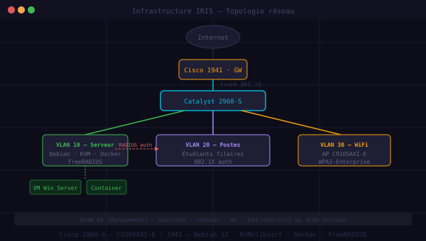
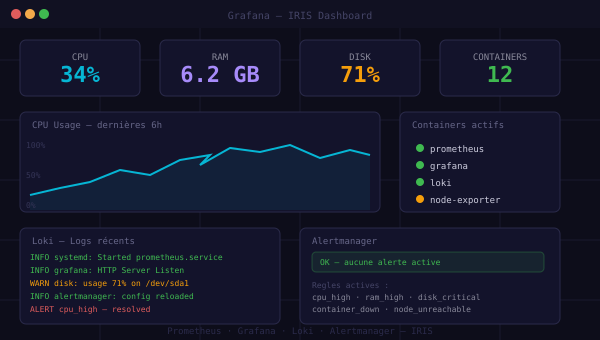

Déployer des Infrastructures Qui Tiennent.
Technicien SISR passionné par l'infrastructure, la virtualisation et l'automatisation — en quête d'un premier poste d'administrateur systèmes.
Kiné@dom Nice
TECHNICIEN SYSTÈMES & RÉSEAUX
2 Sites en Production
DÉVELOPPEMENT WEB
Windows Server
AUTOMATISATION VAGRANT
À propos
// PROFILGestion AD
Gestion des utilisateurs et des ressources informatiques à l'aide d'Active Directory.
Développement Web
Création de sites web pour des entreprises locales, HTML/CSS/JS sans framework.
Scripting & Automatisation
Automatisation des tâches et optimisation des systèmes via Vagrant et PowerShell.
Arsenal Technique
// SYSTEM_CHECK: PASSSystèmes & Virtualisation
Déploiement et administration de systèmes en environnement virtualisé, on-prem et conteneurisé.
Windows Server 2022 Debian 12 / Ubuntu VirtualBox / KVM Vagrant Docker / Docker Compose
Réseau & Services
- Active Directory DSADV
- DNS / DHCPPRO
- GPO / FSRMPRO
- WSUS / WDSMID
- FreeRADIUS / OpenLDAPMID
- Prometheus / GrafanaMID
- TraefikMID
Sécurité & Auth
Scripting & Automatisation
Infrastructure as Code, automatisation système et déploiement scriptés.
- PowerShell
- Python 3
- Bash
- HTML / CSS / JS
- Vagrant
- Git / GitHub
- PostgreSQL
- Redis
- MinIO (S3)
- SQLite
Parcours
// EXPÉRIENCE & FORMATION
BTS SIO SISR
IRIS Mediaschool Nice
Administration systèmes, virtualisation, développement web.
BUT Réseaux & Télécommunications
USPN Villetaneuse
Architecture réseau TCP/IP, VLAN, VPN, supervision réseau.
Bac STI2D SIN
Lycée Guillaume Apollinaire, Nice
Systèmes numériques, électronique, programmation OOP.
Technicien Systèmes & Réseaux
Kiné@dom Nice · Alternance
Administration d'un parc de 15 postes, infrastructure réseau, publication des sites web, automatisation des sauvegardes.
Projets
// PROBLÉMATIQUES IT RÉSOLUESInfrastructure Réseau & Virtualisation — IRIS Nice
École IRIS Nice — Première promotion BTS SIO (SISR + SLAM). Aucune infrastructure de TP en place.
Pas d'environnement de virtualisation pour pratique Pas d'accès réseau sécurisé et tracé par étudiant Besoin de VMs pour SISR + conteneurs pour SLAM Budget limité : 50 000 € TTC max Délai serré : 5 jours de déploiement
KVM natif (vs Proxmox/VMware/XCP-ng)
Exposition des couches virsh/libvirt/QEMU pour apprentissage SISR
5 VLANs Cisco + routage inter-VLAN
Catalyst 2960-S + Cisco 1941W + WiFi EWC C9105AXI-E
802.1X + FreeRADIUS + LDAP
Attribution VLAN dynamique par groupe étudiant
WebVirtCloud RBAC
Portail par étudiant + 60 VMs SISR (WS2022 + Debian 12)
Docker CE + Dockhand
Environnement dev pour promotion SLAM
nwfilter + AppArmor + BorgBackup
Anti-spoofing IP/MAC + snapshots + backups nightly
📦 Livrables
Windows Server
Automatisation complète d'une infrastructure scolaire — AD DS, DNS, DHCP, GPO, FSRM, WSUS, WDS — déployée en 43 min via une seule commande Vagrant.
→ vagrant up
Bringing machine 'SRV-DC1' up...
SRV-DC1: [AD DS] Domaine mediaschool.local [OK]
SRV-DC1: [DNS] Zones configurées [OK]
SRV-DC1: [DHCP] Pool 192.168.100.x [OK]
SRV-DC1: [GPO] 8 politiques appliquées[OK]
Bringing machine 'SRV-FS1' up...
SRV-FS1: [FSRM] Quotas par profil [OK]
SRV-FS1: [WDS] Déploiement automatisé [OK]
Infrastructure déployée en 43 min.

ClassCord
Serveur de chat local inter-filière — SISR (infra) + SLAM (clients).

Kiné@Dom Pro
Site RH pour les kinésithérapeutes — en production.

Kiné@dom
Site grand public pour les patients — en production.

Wiki Outline
Wiki collaboratif Docker + Keycloak SSO pour IRIS Nice.

Parc AD DS
Domaine Active Directory familial — en cours.

Infra Réseau & Virtualisation — IRIS
KVM natif + 5 VLANs + 802.1X/OpenLDAP + 60 VMs SISR + Docker SLAM — PROP-IRIS-v4.

Supervision Serveur IRIS
Stack Prometheus + Grafana — métriques, logs et alerting sur serveur Proxmox.
Veille Technologique
// STRATÉGIE & ANALYSE
En tant que technicien SISR, ma veille technologique est structurée autour d'outils et de sources ciblées pour suivre l'évolution des infrastructures, de la virtualisation et de la cybersécurité.
🔧 Mes Outils de Veille
📚 Sources Principales
Thématiques IT que je suis activement pour rester à jour sur les évolutions du métier.
Docker — Conteneurisation & Orchestration
Comment Docker facilite-t-il le déploiement, l'isolation et la portabilité d'une application dans un environnement SISR ?
Naissance de Docker
Conteneurs Linux packagés et distribuables. Adoption massive grâce à la simplicité du format image.
Docker Compose
Orchestration multi-conteneurs en un fichier YAML — standard pour les environnements de dev et les stacks applicatives.
Kubernetes s'impose
Orchestration à grande échelle. Docker devient le runtime de base des architectures cloud-native.
Standard de l'industrie
Présent dans 90 % des offres DevOps/SysAdmin. Focus sur la sécurité supply chain et les registries privés.
Engine, Images & Registries
Runtime principal, format d'image immuable, distribution via registries publics ou privés.
Docker Compose
Déclaration d'infrastructures multi-services en YAML — utilisé en production dans cette veille (stack Prometheus/Loki).
Réseau & Isolation
Overlay networks, user namespaces, bridges dédiés — isolation inter-conteneurs et inter-étudiants.
Sécurité
Scanning d'images, principe de moindre privilège, AppArmor, politiques de registry.
🔮 Évolution du Métier
L'administrateur système devient de plus en plus un architecte d'infrastructure automatisée. Les compétences en scripting (PowerShell, Python, Bash) et en Infrastructure-as-Code (Vagrant, Terraform) ne sont plus optionnelles : elles sont essentielles pour gérer des parcs à échelle.
☁️ Cloud & Hybride
La frontière entre on-premise et cloud s'estompe. Les entreprises adoptent des architectures hybrides, nécessitant une double compétence : maîtrise des systèmes physiques/virtuels traditionnels ET compréhension des services cloud (AWS, Azure, GCP).
🔒 Cybersécurité Intégrée
La sécurité n'est plus une couche ajoutée après coup. Elle doit être intégrée dès la conception (Zero Trust, principe du moindre privilège, micro-segmentation réseau, authentification forte type 802.1X).
🚀 Ma Trajectoire
Mon objectif : devenir un administrateur systèmes polyvalent capable de déployer, sécuriser et
superviser des infrastructures complètes (physiques, virtuelles, conteneurisées). Compétences clés :
Windows Server, Linux, Virtualisation, Réseau Cisco,
Docker/K8s, Automatisation, Monitoring.
Prêt à rejoindre votre infrastructure ?
Administration systèmes, virtualisation, supervision — disponible à l'embauche.